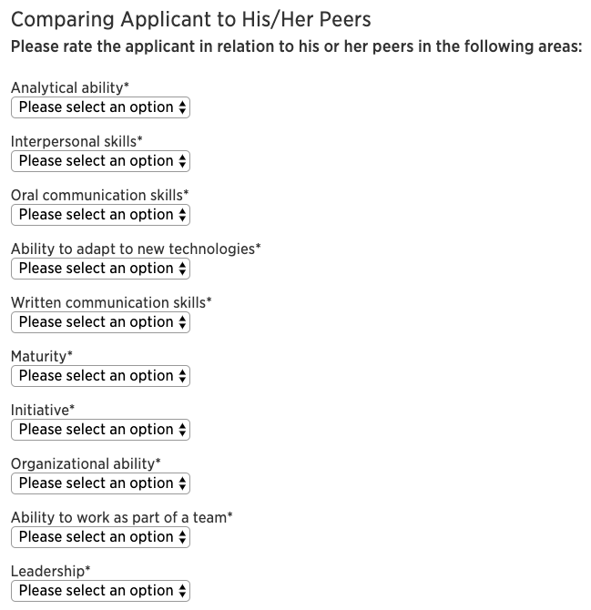

Syllabus
Welcome to Intro to Big Data Systems! We'll deploy and use distributed systems to store and analyze large datasets. Unstructured and structured approaches to storage will be covered. Analysis will involve learning new query languages, processing streaming data, and training machine learning models. Systems covered include Docker, PyTorch, HDFS, Spark, Cassandra, Kafka, and more.
Revisions to Syllabus
- none yet
Learning Objectives
- Deploy distributed systems for data storage and analytics
- Demonstrate competencies with tools and processes necessary for loading data into distributed storage systems
- Write programs that use distributed platforms to efficiently analyze large datasets
- Produce meaning from large datasets by training machine learning models in parallel or on distributed systems
- Measure resource usage and overall cost of running distributed programs
- Optimize distributed analytics programs to reduce resource consumption and program runtime
- Demonstrate competencies with cloud services designed to store or analyze large datasets
Lecture
We meet 3 times a week -- see the lecture schedule here.
I'll ask questions during lecture via TopHat. Answering questions (and getting them correct) will help your participation score, though perfect attendance is not necessary for full credit.
Readings
We'll be learning about many different big data systems, and so no textbook closely corresponds to the lecture content. Thus, attending lectures and taking notes will be your primary resource.
We will have recommended (though optional) readings for many systems, however. We'll select from O'Reilly text books because you can read them free online via the Madison Public Library. You just need to do the following:
- get a library card (free)
- sign into the O'Reilly collection with your card number
- search for the assigned book
Here are some of the main texts we'll reference this semester:
- Designing Data-Intensive Applications: The Big Ideas Behind Reliable, Scalable, and Maintainable Systems (1st edition), by Martin Kleppmann
- Learning Spark: Lightning-Fast Data Analytics (2nd edition), by Jules Damji et al.
- Cassandra: The Definitive Guide, (Revised) Third Edition: Distributed Data at Web Scale 3rd Edition (3rd edition), by Jeff Carpenter et al.
- Machine Learning with PyTorch and Scikit-Learn: Develop machine learning and deep learning models with Python, by Sebastian Raschka et al.
Sometimes we may post lecture notes too.
Communication
We message the class regularly via Canvas announcements. We recommend updating your Canvas settings so that the "Announcement" option is "Notify immediately" so that you don't miss something important.
See the help page for details about how to contact us.
We have various forms for us to leave (optionally anonymous) feedback, report lab attendance, and thank TAs.
Course Components
Grading breakdown
- Midterm (15%)
- Final (20%)
- 12 quizzes (12% total)
- 8 programming projects (6% each, 48% total)
- participation (5% total)
At the end of the semester, you'll have a score out of 100, and I'll set a curve based on where there are obvious breaks in the distribution and the difficulty this semester (there are not a capped numbers of A's, so you're not really competing with your peers).
Exams
These will be multiple choice exams taken in person. The midterm will be in class, the final will be at a different location (to be announced).
Quizzes
There will be a short Canvas quiz due at the end of most Wednesdays. Make sure you know the rules regarding what is allowed and what is not.
Allowed
- however much time you need
- discussing answers with classmates who are taking the quiz at the same time
- referencing texts, notes, or provided course materials
- searching online for general information
- running code
NOT allowed
- taking it more than once
- discussing answers with anybody outside of the course
- discussing with classmates who have already completed the quiz when you haven't completed it yourself yet
- posting anything online about the quizzes
- using such material potentially posted by other students who broke the preceding rule
- getting TA/instructor help on quiz questions prior to the quiz deadline
Projects
See project policies here.
Participation
Some of the things that count towards participation:
- TopHat (most important)
- filling class surveys
- accepted pull requests fixing issues with project specifications
- instructor endorsed piazza contributions (be sure to use your NETID@wisc.edu email so we can identify you)
- other...
Academic Misconduct
Code copying between students is not allowed in this course, except between project partners. Copying includes emailing, taking photos, looking while typing line by line, etc. Copying code then changing it is still copying and thus not allowed. Lock your compute when it's not attended.
Be sure to read and understand the full project collaboration policies here.
Citing ChatGPT (or other LLMs): it's allowed with proper citation (see above link for details).
Citing Online Resources: you can copy small snippets of code from stackoverflow (and other online references) if you cite them. For example, suppose I need to write some code that gets the median number from a list of numbers. I might search for "how to get the median of a list in python" and find a solution at https://stackoverflow.com/questions/24101524/finding-median-of-list-in-python.
I could (legitimately) post code from that page in my code, as long as it has a comment as follows:
# copied/adapted from https://stackoverflow.com/questions/24101524/finding-median-of-list-in-python
def median(lst):
sortedLst = sorted(lst)
lstLen = len(lst)
index = (lstLen - 1) // 2
if (lstLen % 2):
return sortedLst[index]
else:
return (sortedLst[index] + sortedLst[index + 1])/2.0
In contrast, copying from a nearly complete project you find online (that accomplishes what you're trying to do for your project) is not OK. When in doubt, ask us! The best way to stay out of trouble is to be completely transparent about what you're doing.
Recommendation Letters
Earning a recommendation letter is much harder than earning an A in this course. At a minimum, I'll want to see you doing something complex and interesting beyond the assingments. For a typical letter, I'll have collaborated with a student on some project for multiple months, with many iterations of feedback.
Most grad schools require recommenders to fill long forms rating students on various abilities (see an example below). Make sure that if you're asking me, I would be able to fill such a form without needing to put "I don't know" as my answer to many of the questions.
